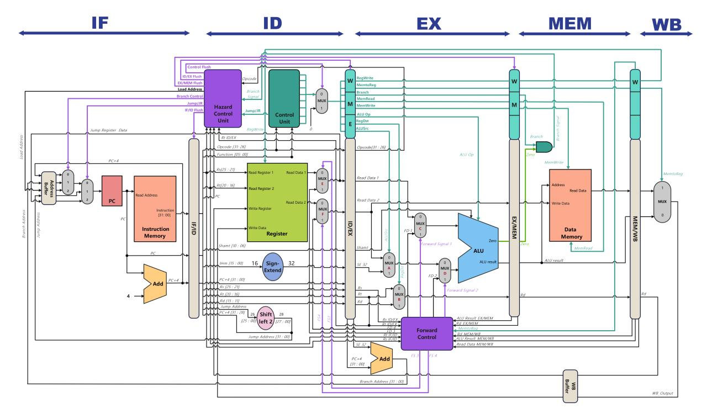

COEN 6741 · Computer Architecture · Concordia University · reworked 2026
A 5-stage pipelined processor, one clock cycle at a time
mini-MIPS is a 32-bit, 11-instruction MIPS subset written in VHDL. This page runs a JavaScript model of the pipeline that matches the RTL cycle for cycle. It was checked against the GHDL simulation on every cycle of 98,666 cycles. You can step through it, edit the program, and see each hazard, forward and flush as it happens.
Pipeline simulator
Pick a program, then step through it. Wires are coloured by the instruction using them. forwarding stall flush mark hazard handling. Click any unit in the datapath for an explanation.
Syntax
add rd, rs, rt nor / xor sll rd, rt, shamt jr rs andi rt, rs, imm (zero-extended) subui rt, rs, imm (sign-extended) lw rt, off(rs) sb rt, off(rs) beq rs, rt, label j label pseudo: li, la, move, b, nop, halt data: .data / .word / .space regs: $0-$31, r0-r31, $t0, $s1 …
Every program must end in halt (j .). The simulation stops three
cycles after the halt reaches ID, once all older instructions have written back.
Pipeline timing diagram
rows = dynamic instructions · columns = clock cycles · click a column to jumpProgram
stage badges show where each instruction isStatistics
Pipeline registers
values latched at the start of this cycleRegister file
Data memory
first 32 words · little-endianHow the pipeline works
Each instruction takes five steps. Every step has its own hardware, so five instructions can be in flight at once, one per stage. Pipeline registers between the stages hold everything the later stages will need. The Show me buttons load a program and jump to the cycle where the event happens.
Hazards, and how the hardware resolves each one
Forwarding unit, the exact conditions
-- EX stage: MUX C (operand A) and MUX D (operand B / store data) if EX/MEM.RegWrite and EX/MEM.dest ≠ 0 and EX/MEM.dest = ID/EX.src → select EX/MEM.ALUResult -- newest value wins elif MEM/WB.RegWrite and MEM/WB.dest ≠ 0 and MEM/WB.dest = ID/EX.src → select WB value (ALU result or loaded word) else → value read in ID -- ID stage: MUX E (rs) and MUX F (rt), for BEQ / JR / ID/EX if EX/MEM.RegWrite and not EX/MEM.MemRead and EX/MEM.dest ≠ 0 and EX/MEM.dest = IF/ID.src → select EX/MEM.ALUResult -- MEM/WB → ID is the register file's write-through bypass
Hazard detection unit, the exact conditions
-- reads(r): r ≠ 0 and (uses_rs and rs = r or uses_rt and rt = r) load_use = ID/EX.MemRead and reads(ID/EX.dest) branch_haz = (Branch or JumpReg) and ( ID/EX.RegWrite and reads(ID/EX.dest) -- not computed yet or EX/MEM.MemRead and reads(EX/MEM.dest) ) -- not loaded yet stall = load_use or branch_haz → PCWrite = 0, IF/ID.Write = 0, ID/EX ← bubble if not stall: BEQ and equal → PC ← PC+4 + (sext(imm) << 2), flush IF/ID J → PC ← {PC+4[31:28], target, 00}, flush IF/ID JR → PC ← rs (forwarded), flush IF/ID
Control signals, generated in ID
Instruction set & encoder
11 instructions in three formats. Type any instruction to see its bit fields, machine code and the control word the decoder produces. It uses the same assembler as the simulator.
Design review: v11 → v12
The 2023 design (v11) compiled and ran in ModelSim, but its testbench was not self-checking, so nobody saw that the program went wrong. The v11 sources were compiled in GHDL and traced cycle by cycle. Each unit was then checked against the MIPS specification. What turned up is below, along with how v12 handles each item.

What v11 actually did in simulation
GHDL 4.1, original test_bench.vhd, sampled every rising edge
The ROM comment says JR R21, but the word 0x08150008 is
really J 0x540020. The PC left the program at 229 ns. A branch then
chose the load-address input (always 0) and the program restarted. Neither failure made the
testbench report anything.
Architecture decisions
All findings
Verification methodology
"It simulates" is not the same as "it is correct". v12 is checked in four independent ways, and the tests themselves were tested by deliberately breaking the design.
CPI across 1,000 random programs
CPI = cycles ÷ instructions, including the 4-cycle fill and drain. Ideal is 1.0. Stalls and flushes are what push it higher. Random programs are dense with dependences, so this is close to a worst case.
Directed programs
Mutation testing: does the regression catch real bugs?
Each mutant puts one realistic bug into a copy of the RTL. Several of them are the actual v11 bugs. A mutant counts as killed if any program in the regression fails. Two mutants survived the first run. One of them showed a real gap in the tests: random branches were almost never taken, so a missing stall went unnoticed. The generator and a directed test were fixed. The other survivor is equivalent, meaning no program can observe it (explained below).
Run it yourself
Everything on this page is regenerated from the v12/ folder of the repository.
Commands
# requirements: GHDL ≥ 3 (VHDL-2008), Python 3, Node ≥ 18 cd v12 make test # ALU unit test + directed + 200 random programs make regress # 1,000 random programs make jscheck # website model vs RTL, cycle by cycle make mutation # 20 injected bugs, all must be caught make site # rebuild ../docs (this page) # one program, by hand python3 sw/mips_asm.py sw/programs/00_tour.s python3 sw/mips_iss.py sw/programs/00_tour.s
Layout
v12/ ├─ rtl/ │ ├─ mips_pkg.vhd types, ISA constants, records │ ├─ mips_cpu.vhd top level: stages + muxes A–F │ ├─ 1_fetch/ PC, IMEM, branch/jump mux, IF/ID │ ├─ 2_decode/ control, regfile, hazard, branch unit │ ├─ 3_execute/ ALU, forwarding unit, EX/MEM │ ├─ 4_memory/ data memory, MEM/WB │ └─ 5_writeback/ WB mux ├─ tb/ tb_mips.vhd (self-checking system), tb_alu.vhd ├─ sw/ assembler, golden ISS, random generator, │ regression, mutation, JS-model checker └─ web/ sources of this page (mips-core.js = the model)